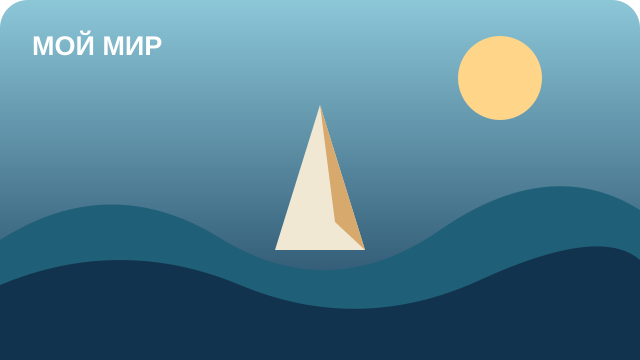

Море как источник вдохновения
Особое место в моих интересах занимает творчество Ивана Айвазовского и его морские пейзажи. Подробнее — в разделе «Увлечения».
Мой мир: искусство, путешествия и повседневная жизнь

Здесь собраны материалы об искусстве, распорядке дня, друзьях и путешествиях. Начать знакомство можно со страницы «Обо мне» или открыть мой дневник путешественника.
Особое место в моих интересах занимает творчество Ивана Айвазовского и его морские пейзажи. Подробнее — в разделе «Увлечения».
В дневнике собраны впечатления о Грузии и Италии. Посмотрите маршруты путешествий.
В отчёте о предыдущей работе были описаны поездка в Грузию в мае 2024 года, Тбилиси, Кахетия, Сванетия и маршрут по Италии. Среди достопримечательностей — церковь Гергети, Казбек, Колизей и галерея Уффици.
Путешествия остаются одним из источников вдохновения наряду с искусством и веб-разработкой.